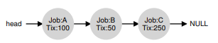
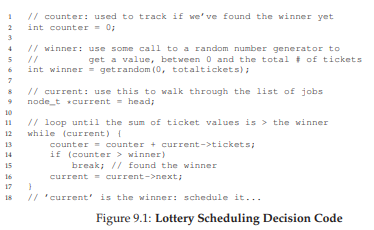
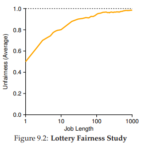
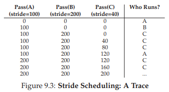
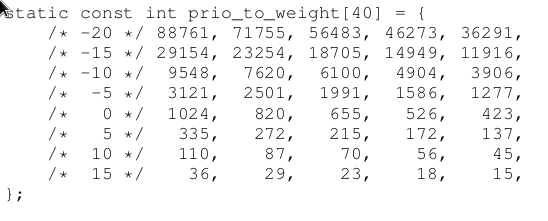
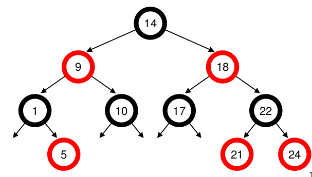

9. Lập lịch: Chia sẻ theo tỷ lệ (Proportional Share)
Trong chương này, chúng ta sẽ tìm hiểu một loại scheduler (bộ lập lịch) khác được gọi là proportional-share scheduler (bộ lập lịch chia sẻ theo tỷ lệ), đôi khi còn được gọi là fair-share scheduler (bộ lập lịch chia sẻ công bằng).
Proportional-share dựa trên một ý tưởng đơn giản: thay vì tối ưu cho turnaround time (thời gian hoàn thành) hoặc response time (thời gian phản hồi), bộ lập lịch có thể cố gắng đảm bảo rằng mỗi job (tác vụ) nhận được một tỷ lệ phần trăm nhất định của thời gian CPU.
Một ví dụ tiêu biểu ban đầu về proportional-share scheduling được tìm thấy trong nghiên cứu của Waldspurger và Weihl [WW94], được gọi là lottery scheduling (lập lịch xổ số); tuy nhiên, ý tưởng này thực tế còn xuất hiện sớm hơn [KL88]. Ý tưởng cơ bản rất đơn giản: định kỳ tổ chức một “xổ số” để xác định process (tiến trình) nào sẽ được chạy tiếp theo; process nào cần chạy thường xuyên hơn sẽ được cấp nhiều “cơ hội trúng” hơn. Nghe đơn giản phải không? Giờ hãy đi vào chi tiết! Nhưng trước hết, chúng ta có một điểm mấu chốt:
CRUX: HOW TO SHARE THE CPU PROPORTIONALLY
Làm thế nào để thiết kế một bộ lập lịch chia sẻ CPU theo tỷ lệ? Những cơ chế chính để thực hiện điều đó là gì? Chúng hiệu quả đến mức nào?
9.1 Khái niệm cơ bản: Ticket đại diện cho phần chia của bạn
Cốt lõi của lottery scheduling là một khái niệm rất cơ bản: ticket (vé), được dùng để biểu diễn phần tài nguyên mà một process (hoặc người dùng, hoặc thực thể khác) nên nhận được. Tỷ lệ phần trăm số ticket mà một process sở hữu chính là tỷ lệ phần tài nguyên hệ thống mà nó được cấp.
Ví dụ: giả sử có hai process, A và B, trong đó A có 75 ticket và B chỉ có 25 ticket. Như vậy, chúng ta muốn A nhận 75% thời gian CPU và B nhận 25% còn lại.
Lottery scheduling đạt được điều này theo cách xác suất (probabilistic, nhưng không phải tất định — deterministic) bằng cách tổ chức một “xổ số” định kỳ (ví dụ: mỗi time slice). Cách tổ chức xổ số rất đơn giản: bộ lập lịch cần biết tổng số ticket (trong ví dụ này là 100). Sau đó, bộ lập lịch chọn một ticket thắng, là một số từ 0 đến 99^[1]. Giả sử A giữ các ticket từ 0 đến 74 và B giữ từ 75 đến 99, ticket thắng sẽ quyết định A hay B được chạy. Bộ lập lịch sau đó nạp trạng thái của process thắng và chạy nó.
TIP: USE RANDOMNESS
Một trong những điểm thú vị nhất của lottery scheduling là việc sử dụng randomness (tính ngẫu nhiên). Khi cần đưa ra quyết định, cách tiếp cận ngẫu nhiên thường là một phương pháp đơn giản và mạnh mẽ. Random có ít nhất ba ưu điểm so với các quyết định truyền thống:
- Random thường tránh được các tình huống “góc khuất” (corner case) mà thuật toán truyền thống có thể gặp khó khăn. Ví dụ: chính sách thay thế LRU (Least Recently Used — sẽ được nghiên cứu kỹ hơn trong chương về virtual memory) thường là một thuật toán tốt, nhưng có thể đạt hiệu năng tệ nhất với một số workload tuần hoàn-tuần tự. Random thì không có trường hợp tệ nhất như vậy.
- Random nhẹ về tài nguyên, yêu cầu rất ít trạng thái để theo dõi các lựa chọn. Trong một thuật toán fair-share truyền thống, việc theo dõi lượng CPU mỗi process đã dùng cần per-process accounting (ghi nhận riêng cho từng process), phải cập nhật sau mỗi lần chạy. Random chỉ cần lưu trạng thái tối thiểu (ví dụ: số ticket mỗi process có).
- Random có thể rất nhanh. Miễn là việc sinh số ngẫu nhiên nhanh, thì quyết định cũng nhanh, và do đó random có thể được dùng ở nhiều nơi yêu cầu tốc độ. Tất nhiên, càng yêu cầu nhanh thì random càng có xu hướng trở thành pseudo-random (giả ngẫu nhiên).
Ví dụ kết quả các ticket thắng của một lottery scheduler:
63 85 70 39 76 17 29 41 36 39 10 99 68 83 63 62 43 0 49 49
Lịch chạy tương ứng:
A A A A A A A A A A A A A A A A
B B B B
Như bạn thấy, việc sử dụng randomness trong lottery scheduling dẫn đến tính đúng đắn theo xác suất trong việc đạt tỷ lệ mong muốn, nhưng không có đảm bảo tuyệt đối. Trong ví dụ trên, B chỉ chạy 4 trên 20 time slice (20%), thay vì 25% như mong muốn. Tuy nhiên, khi hai job này chạy lâu hơn, xác suất đạt đúng tỷ lệ sẽ cao hơn.
^[1]: Các nhà khoa học máy tính luôn bắt đầu đếm từ 0. Điều này kỳ lạ với người ngoài ngành đến mức có người nổi tiếng đã viết về lý do tại sao chúng ta làm vậy [D82].
TIP: USE TICKETS TO REPRESENT SHARES
Một trong những cơ chế mạnh mẽ (và cơ bản) nhất trong thiết kế lottery (và stride) scheduling là ticket. Ticket được dùng để biểu diễn phần CPU của một process trong ví dụ này, nhưng có thể áp dụng rộng hơn. Ví dụ: trong nghiên cứu gần đây về quản lý virtual memory cho hypervisor, Waldspurger cho thấy ticket có thể được dùng để biểu diễn phần bộ nhớ của một hệ điều hành khách [W02]. Vì vậy, nếu bạn cần một cơ chế để biểu diễn tỷ lệ sở hữu, khái niệm này có thể chính là... “tấm vé” bạn cần.
9.2 Các cơ chế với Ticket
Lottery scheduling cung cấp nhiều cơ chế để thao tác với ticket theo những cách khác nhau và đôi khi hữu ích.
1. Ticket currency
Currency cho phép một người dùng với một tập ticket phân bổ chúng cho các job của mình theo bất kỳ “đơn vị tiền tệ” nào họ muốn; hệ thống sẽ tự động chuyển đổi đơn vị này sang giá trị toàn cục.
Ví dụ: giả sử người dùng A và B mỗi người được cấp 100 ticket.
- Người dùng A chạy hai job, A1 và A2, và cấp cho mỗi job 500 ticket (trong tổng 1000 ticket theo “đơn vị” của A).
- Người dùng B chỉ chạy một job và cấp cho nó 10 ticket (trong tổng 10 ticket theo “đơn vị” của B).
Hệ thống sẽ chuyển đổi:
- A1 và A2 từ 500 ticket mỗi (theo đơn vị của A) thành 50 ticket mỗi (theo đơn vị toàn cục).
- B1 từ 10 ticket thành 100 ticket (theo đơn vị toàn cục).
Xổ số sau đó được tổ chức trên tổng số ticket toàn cục (200) để xác định job nào chạy.
User A -> 500 (A’s currency) to A1 -> 50 (global currency)
-> 500 (A’s currency) to A2 -> 50 (global currency)
User B -> 10 (B’s currency) to B1 -> 100 (global currency)
2. Ticket transfer
Một process có thể tạm thời chuyển ticket của mình cho process khác. Điều này đặc biệt hữu ích trong mô hình client/server, khi client gửi yêu cầu cho server xử lý. Để tăng tốc, client có thể chuyển ticket cho server để server có nhiều CPU hơn khi xử lý yêu cầu. Khi xong, server trả lại ticket cho client.
3. Ticket inflation
Một process có thể tạm thời tăng hoặc giảm số ticket mình sở hữu. Trong môi trường cạnh tranh không tin tưởng, điều này không hợp lý (vì process tham lam có thể tự cấp cho mình nhiều ticket và chiếm CPU). Nhưng trong môi trường tin cậy, nếu một process biết mình cần nhiều CPU hơn, nó có thể tăng ticket để phản ánh nhu cầu đó mà không cần trao đổi với process khác.
// counter: dùng để theo dõi đã tìm thấy process thắng chưa
int counter = 0;
// winner: gọi bộ sinh số ngẫu nhiên để
// lấy giá trị >= 0 và <= (totaltickets - 1)
int winner = getrandom(0, totaltickets);
// current: dùng để duyệt qua danh sách job
node_t *current = head;
while (current) {
counter = counter + current->tickets;
if (counter > winner)
break; // tìm thấy process thắng
current = current->next;
}
// 'current' là process thắng: lập lịch cho nó...
Hình 9.1: Mã quyết định lập lịch kiểu Lottery
9.3 Implementation
Probably the most amazing thing about lottery scheduling is the simplicity of its implementation. All you need is a good random number generator to pick the winning ticket, a data structure to track the processes of the system (e.g., a list), and the total number of tickets. Let’s assume we keep the processes in a list. Here is an example comprised of three processes, A, B, and C, each with some number of tickets.

Để đưa ra quyết định lập lịch, trước tiên chúng ta phải chọn một số ngẫu nhiên (winner) từ tổng số ticket (400)^[2]. Giả sử chúng ta chọn số 300. Sau đó, ta chỉ cần duyệt qua danh sách, sử dụng một biến đếm (counter) đơn giản để giúp tìm ra ticket thắng (Hình 9.1).

Đoạn code sẽ duyệt danh sách process (tiến trình), cộng số ticket của mỗi process vào counter cho đến khi giá trị này vượt quá winner. Khi điều đó xảy ra, phần tử hiện tại trong danh sách chính là process thắng.
Với ví dụ ticket thắng là 300, quá trình diễn ra như sau:
- Ban đầu,
counterđược tăng lên 100 để tính số ticket của A; vì 100 < 300, vòng lặp tiếp tục. - Sau đó,
counterđược cập nhật thành 150 (thêm ticket của B), vẫn nhỏ hơn 300 nên tiếp tục. - Cuối cùng,
counterđược cập nhật thành 400 (rõ ràng > 300), và do đó vòng lặp kết thúc vớicurrenttrỏ tới C (process thắng).
^[2]: Thật bất ngờ, như Björn Lindberg đã chỉ ra, việc này có thể khó thực hiện đúng; xem thêm chi tiết tại: http://stackoverflow.com/questions/2509679/how-to-generate-a-random-number-from-within-a-range

Hình 9.2: Nghiên cứu tính công bằng của Lottery Scheduling
Để quá trình này hiệu quả nhất, thông thường tốt nhất là sắp xếp danh sách theo thứ tự giảm dần số ticket. Thứ tự này không ảnh hưởng đến tính đúng đắn của thuật toán; tuy nhiên, nó giúp giảm số vòng lặp cần duyệt, đặc biệt khi có một vài process sở hữu phần lớn số ticket.
9.4 Ví dụ minh họa
Để giúp hiểu rõ hơn động lực của lottery scheduling, chúng ta thực hiện một nghiên cứu ngắn về thời gian hoàn thành của hai job cạnh tranh với nhau, mỗi job có cùng số ticket (100) và cùng thời gian chạy (R, sẽ thay đổi).
Trong kịch bản này, chúng ta muốn mỗi job hoàn thành gần như cùng lúc, nhưng do tính ngẫu nhiên của lottery scheduling, đôi khi một job sẽ hoàn thành trước job kia.
Để định lượng sự khác biệt này, ta định nghĩa một chỉ số công bằng đơn giản F, bằng thời điểm job hoàn thành trước chia cho thời điểm job hoàn thành sau. Ví dụ: nếu R = 10, job đầu tiên hoàn thành ở thời điểm 10 và job thứ hai ở thời điểm 20, thì F = 10/20 = 0.5. Khi cả hai job hoàn thành gần như cùng lúc, F sẽ gần bằng 1. Mục tiêu của chúng ta là đạt F = 1 (bộ lập lịch hoàn toàn công bằng).
Hình 9.2 biểu diễn đồ thị giá trị công bằng trung bình khi thay đổi độ dài R của hai job từ 1 đến 1000, qua 30 lần thử (kết quả được tạo bởi trình mô phỏng ở cuối chương). Như bạn thấy, khi thời gian chạy của job ngắn, công bằng trung bình có thể khá thấp. Chỉ khi các job chạy qua nhiều time slice, lottery scheduler mới tiến gần đến kết quả công bằng mong muốn.
9.5 Gán ticket như thế nào?
Một vấn đề chúng ta chưa giải quyết với lottery scheduling là: làm thế nào để gán ticket cho các job?
Đây là một vấn đề khó, vì hành vi của hệ thống phụ thuộc mạnh vào cách phân bổ ticket. Một cách tiếp cận là giả định người dùng biết rõ nhất; trong trường hợp đó, mỗi người dùng được cấp một số ticket và họ có thể phân bổ cho các job của mình tùy ý. Tuy nhiên, đây thực chất không phải là giải pháp, vì nó không chỉ ra cách phân bổ tối ưu. Do đó, với một tập job cho trước, “bài toán gán ticket” vẫn còn bỏ ngỏ.
9.6 Stride Scheduling
Bạn có thể tự hỏi: tại sao phải dùng ngẫu nhiên? Như đã thấy, randomness giúp tạo ra một bộ lập lịch đơn giản và gần đúng, nhưng đôi khi không đạt tỷ lệ chính xác, đặc biệt trong khoảng thời gian ngắn. Vì lý do này, Waldspurger đã phát minh stride scheduling — một bộ lập lịch fair-share deterministic (tất định) [W95].
Stride scheduling cũng khá đơn giản: mỗi job trong hệ thống có một stride, tỷ lệ nghịch với số ticket mà nó có. Trong ví dụ trước, với A, B, C lần lượt có 100, 50 và 250 ticket, ta tính stride bằng cách lấy một số lớn chia cho số ticket. Nếu lấy 10.000 chia cho số ticket, ta được stride của A, B, C lần lượt là 100, 200 và 40.
Mỗi khi một process chạy, ta tăng pass value (giá trị pass) của nó thêm stride để theo dõi tiến trình toàn cục.
Bộ lập lịch chọn process có pass value nhỏ nhất để chạy; khi chạy xong, tăng pass value của nó thêm stride.
Pseudocode từ Waldspurger [W95]:
curr = remove_min(queue); // chọn process có pass nhỏ nhất
schedule(curr); // chạy trong một quantum
curr->pass += curr->stride; // cập nhật pass
insert(queue, curr); // đưa lại vào hàng đợi
Ví dụ: ban đầu A, B, C đều có pass = 0. Giả sử chọn A, pass của A = 100. Tiếp theo chạy B, pass = 200. Chạy C, pass = 40. Lúc này C nhỏ nhất, chạy tiếp, pass = 80, rồi lại chạy C, pass = 120. Tiếp theo A (pass = 200, bằng B). Sau đó C chạy hai lần nữa (pass = 160, rồi 200). Khi tất cả pass bằng nhau, chu kỳ lặp lại.

Hình 9.3: Dấu vết hoạt động của Stride Scheduling
Kết quả: C chạy 5 lần, A chạy 2 lần, B chạy 1 lần — đúng tỷ lệ ticket 250:100:50. Lottery đạt tỷ lệ theo xác suất, stride đạt chính xác sau mỗi chu kỳ.
Điểm khác biệt lớn: stride cần global state (trạng thái toàn cục). Nếu một job mới vào giữa chừng, đặt pass = 0 sẽ khiến nó chiếm CPU. Lottery thì không cần global state; chỉ cần thêm process mới với số ticket của nó và cập nhật tổng ticket.
9.7 Linux Completely Fair Scheduler (CFS)
Dù có các nghiên cứu trước về fair-share scheduling, Linux hiện tại đạt mục tiêu tương tự theo cách khác. Completely Fair Scheduler (CFS) [J09] thực hiện fair-share scheduling một cách hiệu quả và mở rộng tốt.
Mục tiêu: giảm tối đa thời gian đưa ra quyết định lập lịch, nhờ thiết kế và cấu trúc dữ liệu phù hợp. Nghiên cứu tại Google cho thấy, ngay cả sau tối ưu mạnh, lập lịch vẫn chiếm ~5% CPU của toàn bộ datacenter [K+15]. Giảm overhead này là mục tiêu quan trọng.

Hình 9.4: Ví dụ đơn giản về CFS
Hoạt động cơ bản
Khác với hầu hết scheduler dựa trên time slice cố định, CFS chia CPU công bằng cho tất cả process cạnh tranh, dùng kỹ thuật virtual runtime (vruntime). Khi process chạy, vruntime của nó tăng theo thời gian thực. Khi cần lập lịch, CFS chọn process có vruntime nhỏ nhất.
Vấn đề: khi nào dừng process hiện tại để chạy process khác? Nếu chuyển quá thường xuyên → công bằng cao nhưng overhead lớn (context switching nhiều). Nếu chuyển ít → hiệu năng cao nhưng công bằng ngắn hạn giảm.
CFS điều chỉnh qua tham số sched_latency: giá trị này quyết định tổng thời gian để tất cả process được chạy một lần. Mặc định ~48 ms; chia cho số process (n) để ra time slice động cho mỗi process.
Ví dụ: n = 4 → mỗi process có 12 ms. CFS chạy job đầu tiên 12 ms, rồi chọn job có vruntime thấp nhất tiếp theo. Trong Hình 9.4, 4 job (A, B, C, D) mỗi job chạy 2 time slice; sau đó C, D hoàn thành, A và B chạy luân phiên 24 ms.
Khi có “quá nhiều” process đang chạy
Nhưng điều gì sẽ xảy ra nếu có “quá nhiều” process (tiến trình) đang chạy? Điều đó chẳng phải sẽ dẫn đến time slice (lượng thời gian chia cho mỗi tiến trình) quá nhỏ, và do đó gây ra quá nhiều context switch (chuyển ngữ cảnh) hay sao? Câu hỏi hay! Và câu trả lời là: đúng vậy.
Để giải quyết vấn đề này, CFS (Completely Fair Scheduler) bổ sung một tham số khác, min_granularity, thường được đặt ở giá trị như 6 ms. CFS sẽ không bao giờ đặt time slice của một process nhỏ hơn giá trị này, nhằm đảm bảo không tốn quá nhiều thời gian cho chi phí lập lịch (scheduling overhead).
Ví dụ: nếu có 10 process đang chạy, phép tính ban đầu sẽ chia sched_latency cho 10 để xác định time slice (kết quả: 4.8 ms). Tuy nhiên, do có min_granularity, CFS sẽ đặt time slice của mỗi process thành 6 ms. Mặc dù CFS sẽ không hoàn toàn công bằng tuyệt đối trong khoảng thời gian sched_latency mục tiêu (48 ms), nhưng nó sẽ gần đạt được, đồng thời vẫn duy trì hiệu suất CPU cao.
Lưu ý rằng CFS sử dụng periodic timer interrupt (ngắt định kỳ), nghĩa là nó chỉ có thể đưa ra quyết định tại các khoảng thời gian cố định. Ngắt này xảy ra thường xuyên (ví dụ: mỗi 1 ms), cho phép CFS “thức dậy” và xác định xem job hiện tại đã chạy hết thời gian của nó chưa. Nếu một job có time slice không phải là bội số hoàn hảo của khoảng thời gian ngắt, điều đó vẫn ổn; CFS theo dõi vruntime (thời gian chạy ảo) một cách chính xác, nghĩa là về lâu dài, nó sẽ tiệm cận việc chia sẻ CPU lý tưởng.
Trọng số (Weighting) và Niceness
CFS cũng cho phép điều khiển mức ưu tiên (priority) của process, cho phép người dùng hoặc quản trị viên cấp cho một số process phần CPU lớn hơn. CFS không làm điều này bằng ticket như lottery scheduling, mà thông qua một cơ chế cổ điển của UNIX được gọi là nice level của process.
Tham số nice có thể được đặt từ -20 đến +19 cho một process, với giá trị mặc định là 0. Giá trị nice dương nghĩa là ưu tiên thấp hơn, còn giá trị âm nghĩa là ưu tiên cao hơn; nói cách khác, “quá nice” thì sẽ ít được hệ thống chú ý hơn trong lập lịch.
CFS ánh xạ giá trị nice của mỗi process sang một weight (trọng số), như trong bảng sau:

Các trọng số này cho phép tính effective time slice (time slice hiệu dụng) của mỗi process (giống như cách tính trước đây), nhưng giờ có tính đến sự khác biệt về mức ưu tiên.
Công thức tính như sau, giả sử có n process:
$$ \text{time_slice}_i = \frac{\text{weight}i}{\sum{j=0}^{n-1} \text{weight}_j} \times \text{sched_latency} $$ (9.1)
Ví dụ: giả sử có hai job, A và B. A, vì là job “quý giá” nhất, được cấp ưu tiên cao hơn với nice = -5; B, vì “chúng ta ghét nó”1, giữ mức ưu tiên mặc định (nice = 0). Điều này có nghĩa weight_A (từ bảng) là 3121, còn weight_B là 1024. Khi tính time slice, ta sẽ thấy A có khoảng 43% của sched_latency (tức ~36 ms), còn B có khoảng 14% (tức ~12 ms).
Ngoài việc tổng quát hóa phép tính time slice, cách CFS tính vruntime cũng phải được điều chỉnh. Công thức mới lấy thời gian chạy thực tế của process i (runtime_i) và nhân với tỷ lệ nghịch của trọng số process đó, bằng cách chia default weight (1024, ký hiệu weight_0) cho weight_i. Trong ví dụ này, vruntime của A sẽ tăng với tốc độ bằng 1/3 so với B.
$$ \text{vruntime}_i = \text{runtime}_i \times \frac{\text{weight}_0}{\text{weight}_i} $$ (9.2)
Một điểm thông minh trong việc xây dựng bảng trọng số là: bảng này giữ nguyên tỷ lệ chia sẻ CPU khi chênh lệch giá trị nice là hằng số. Ví dụ: nếu process A có nice = 5 (thay vì -5) và process B có nice = 10 (thay vì 0), CFS sẽ lập lịch chúng giống hệt như trước. Bạn có thể tự tính để thấy điều này.
Sử dụng Red-Black Tree
Một trọng tâm lớn của CFS là hiệu suất. Với một scheduler, hiệu suất có nhiều khía cạnh, nhưng một trong số đó rất đơn giản: khi cần tìm job tiếp theo để chạy, bộ lập lịch phải làm điều đó nhanh nhất có thể.
Cấu trúc dữ liệu đơn giản như list (danh sách) không mở rộng tốt: các hệ thống hiện đại đôi khi có hàng nghìn process, và việc tìm kiếm trong một danh sách dài mỗi vài mili-giây là lãng phí.
CFS giải quyết điều này bằng cách lưu các process trong một red-black tree [B72]. Red-black tree là một dạng balanced tree (cây cân bằng); khác với binary tree (cây nhị phân) đơn giản (có thể thoái hóa thành dạng danh sách trong trường hợp chèn xấu nhất), cây cân bằng thực hiện thêm một số thao tác để duy trì độ sâu thấp, đảm bảo các thao tác có độ phức tạp logarithmic (O(log n)) thay vì tuyến tính.
CFS không lưu tất cả process trong cấu trúc này; chỉ các process đang chạy hoặc sẵn sàng chạy (runnable) mới được lưu. Nếu một process chuyển sang trạng thái ngủ (ví dụ: chờ I/O hoàn tất hoặc chờ gói tin mạng), nó sẽ bị loại khỏi cây và được quản lý ở nơi khác.
Ví dụ: giả sử có 10 job với giá trị vruntime lần lượt: 1, 5, 9, 10, 14, 18, 17, 21, 22, 24. Nếu lưu các job này trong một danh sách có thứ tự, việc tìm job tiếp theo để chạy rất đơn giản: chỉ cần lấy phần tử đầu tiên. Tuy nhiên, khi đưa job đó trở lại danh sách (đúng vị trí), ta phải quét danh sách để tìm chỗ chèn, một thao tác O(n). Việc tìm kiếm cũng kém hiệu quả, mất thời gian tuyến tính trung bình.
Vâng, chúng tôi cố tình dùng ngữ pháp “sai” ở đây, xin đừng gửi báo lỗi. Vì sao? Chỉ là một ám chỉ nhẹ đến Chúa tể những chiếc nhẫn và nhân vật phản anh hùng Gollum yêu thích của chúng tôi, không có gì nghiêm trọng.

Hình 9.5: Cây Red-Black trong CFS
Khi lưu các giá trị này trong red-black tree, hầu hết các thao tác trở nên hiệu quả hơn. Các process được sắp xếp trong cây theo vruntime, và hầu hết các thao tác (như chèn hoặc xóa) đều có độ phức tạp O(log n). Khi n lên đến hàng nghìn, O(log n) nhanh hơn tuyến tính một cách đáng kể.
Xử lý I/O và các process đang ngủ (Sleeping Processes)
Một vấn đề phát sinh khi chọn vruntime (thời gian chạy ảo) nhỏ nhất để chạy tiếp theo là với các job (tác vụ) đã ở trạng thái ngủ (sleep) trong một khoảng thời gian dài.
Hãy tưởng tượng có hai process (tiến trình) A và B:
- A chạy liên tục.
- B ngủ trong một khoảng thời gian dài (ví dụ: 10 giây).
Khi B thức dậy, vruntime của nó sẽ chậm hơn A tới 10 giây, và do đó (nếu không cẩn thận), B sẽ chiếm CPU trong 10 giây tiếp theo để “bù lại”, dẫn đến việc A bị starvation (đói CPU).
CFS (Completely Fair Scheduler) xử lý trường hợp này bằng cách điều chỉnh vruntime của job khi nó thức dậy. Cụ thể, CFS đặt vruntime của job đó bằng giá trị nhỏ nhất tìm thấy trong cây (tree) — nhớ rằng cây này chỉ chứa các job đang chạy [B+18].
Bằng cách này, CFS tránh được starvation, nhưng không phải không có cái giá phải trả: các job ngủ trong thời gian ngắn và thức dậy thường xuyên có thể sẽ không bao giờ nhận được phần CPU công bằng của mình [AC97].
Các tính năng thú vị khác của CFS
CFS có rất nhiều tính năng khác, quá nhiều để bàn hết ở thời điểm này. Nó bao gồm nhiều heuristic (phương pháp kinh nghiệm) để cải thiện hiệu năng cache, có các chiến lược xử lý hiệu quả khi có nhiều CPU (sẽ được thảo luận ở phần sau của sách), có khả năng lập lịch trên các nhóm process lớn (thay vì coi mỗi process là một thực thể độc lập), và nhiều tính năng thú vị khác.
Bạn có thể đọc các nghiên cứu gần đây, bắt đầu từ Bouron [B+18], để tìm hiểu thêm.
TIP: USE EFFICIENT DATA STRUCTURES WHEN APPROPRIATE
Trong nhiều trường hợp, một list (danh sách) là đủ. Nhưng cũng có nhiều trường hợp thì không. Việc biết khi nào nên dùng cấu trúc dữ liệu nào là một dấu hiệu của kỹ thuật tốt. Trong trường hợp được thảo luận ở đây, các danh sách đơn giản được dùng trong các scheduler trước đây không hoạt động tốt trên các hệ thống hiện đại, đặc biệt là trong các máy chủ tải nặng ở datacenter. Những hệ thống này có hàng nghìn process đang hoạt động; việc tìm kiếm trong một danh sách dài để chọn job tiếp theo cho mỗi lõi CPU vài mili-giây một lần sẽ lãng phí chu kỳ CPU quý giá.
Một cấu trúc tốt hơn là cần thiết, và CFS đã cung cấp điều đó bằng cách triển khai xuất sắc red-black tree.
Nói chung, khi chọn cấu trúc dữ liệu cho hệ thống bạn đang xây dựng, hãy cân nhắc kỹ mẫu truy cập (access pattern) và tần suất sử dụng; hiểu rõ những điều này sẽ giúp bạn triển khai cấu trúc phù hợp cho nhiệm vụ.
9.8 Tóm tắt
Chúng ta đã giới thiệu khái niệm proportional-share scheduling (lập lịch chia sẻ theo tỷ lệ) và thảo luận ngắn gọn ba phương pháp:
- Lottery scheduling: sử dụng tính ngẫu nhiên một cách thông minh để đạt chia sẻ theo tỷ lệ.
- Stride scheduling: đạt được điều này một cách deterministic (tất định).
- Completely Fair Scheduler (CFS) của Linux: bộ lập lịch “thực” duy nhất được bàn trong chương này, hoạt động giống weighted round-robin (vòng quay ưu tiên theo trọng số) với time slice động, nhưng được thiết kế để mở rộng và hoạt động tốt dưới tải; theo hiểu biết của chúng ta, đây là bộ lập lịch fair-share được sử dụng rộng rãi nhất hiện nay.
Không có bộ lập lịch nào là “thuốc chữa bách bệnh”, và các fair-share scheduler cũng có những vấn đề riêng. Một vấn đề là các phương pháp này không kết hợp tốt với I/O [AC97]; như đã đề cập, các job thực hiện I/O thỉnh thoảng có thể không nhận được phần CPU công bằng. Một vấn đề khác là chúng bỏ ngỏ bài toán khó về phân bổ ticket hoặc priority — ví dụ: làm sao biết trình duyệt của bạn nên được cấp bao nhiêu ticket, hoặc đặt nice value nào cho trình soạn thảo văn bản?
Các scheduler đa dụng khác (như MLFQ đã bàn trước đó, và các scheduler Linux tương tự) xử lý các vấn đề này tự động, do đó có thể dễ triển khai hơn.
Tin tốt là có nhiều lĩnh vực mà các vấn đề này không phải mối quan tâm chính, và các proportional-share scheduler được sử dụng rất hiệu quả. Ví dụ: trong một virtualized data center (trung tâm dữ liệu ảo hóa) hoặc cloud, nơi bạn muốn cấp 1/4 chu kỳ CPU cho máy ảo Windows và phần còn lại cho hệ thống Linux gốc, chia sẻ theo tỷ lệ có thể đơn giản và hiệu quả.
Ý tưởng này cũng có thể mở rộng cho các tài nguyên khác; xem Waldspurger [W02] để biết chi tiết về cách chia sẻ bộ nhớ theo tỷ lệ trong VMWare ESX Server.
Tham khảo
[AC97] “Extending Proportional-Share Scheduling to a Network of Workstations”
Andrea C. Arpaci-Dusseau and David E. Culler
PDPTA’97, June 1997
A paper by one of the authors on how to extend proportional-share scheduling to work better in a clustered environment.
[D82] “Why Numbering Should Start At Zero”
Edsger Dijkstra, August 1982
http://www.cs.utexas.edu/users/EWD/ewd08xx/EWD831.PDF
A short note from E. Dijkstra, one of the pioneers of computer science. We’ll be hearing much more on this guy in the section on Concurrency. In the meanwhile, enjoy this note, which includes this motivating quote: “One of my colleagues — not a computing scientist — accused a number of younger computing scientists of ’pedantry’ because they started numbering at zero.” The note explains why doing so is logical.
[KL88] “A Fair Share Scheduler”
J. Kay and P. Lauder
CACM, Volume 31 Issue 1, January 1988
An early reference to a fair-share scheduler.
[WW94] “Lottery Scheduling: Flexible Proportional-Share Resource Management”
Carl A. Waldspurger and William E. Weihl
OSDI ’94, November 1994
The landmark paper on lottery scheduling that got the systems community re-energized about scheduling, fair sharing, and the power of simple randomized algorithms.
[W95] “Lottery and Stride Scheduling: Flexible
Proportional-Share Resource Management”
Carl A. Waldspurger
Ph.D. Thesis, MIT, 1995
The award-winning thesis of Waldspurger’s that outlines lottery and stride scheduling. If you’re thinking of writing a Ph.D. dissertation at some point, you should always have a good example around, to give you something to strive for: this is such a good one.
[W02] “Memory Resource Management in VMware ESX Server”
Carl A. Waldspurger
OSDI ’02, Boston, Massachusetts
The paper to read about memory management in VMMs (a.k.a., hypervisors). In addition to being relatively easy to read, the paper contains numerous cool ideas about this new type of VMM-level memory management.